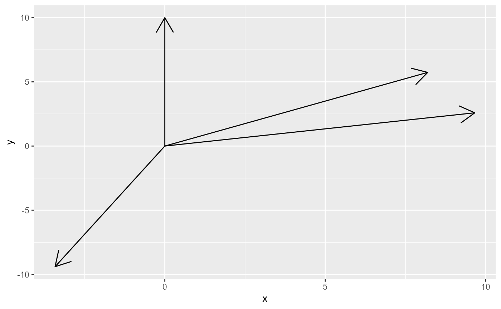
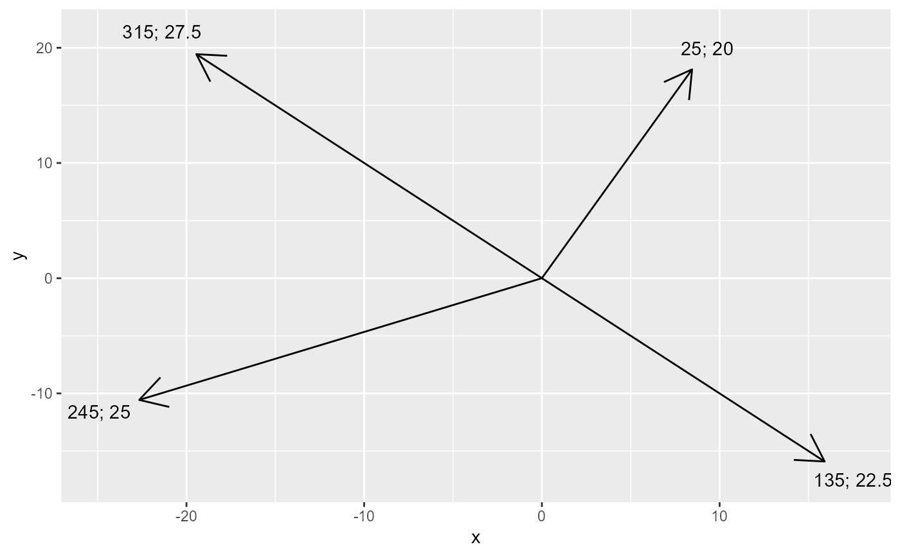

make_trig_vec.RdProjects point within a plane to a points based on angle and distance starting from one starting point.
make_trig_vec(start, angle, dist, prolong = NULL, prolong.opt = "m", d = Inf)Numeric vector of length two. First value sets x- and second value sets y-coordinate of the start.
Angles of the trigonometric vectors.
Distances from center to final points.
Numeric vector or NULL. If numeric, sets values with which
the projected vector is prolonged. For that, an additional set
of xend and yend variables is added to the output data.frame for
each prolonging.
Character value. Either 'a' or 'm'. If 'a', the prolong
value is added to the distance. If 'm', the distance is multiplied with
the prolong value. To reduce the length of the vector instead of prolonging it,
set prolong.opt = *'m'* and prolong < 1 or prolong.opt = *'a'* and prolong < 0.)
Number of digits to which the output values are rounded.
Data.frame with four variables x, y, xend and yend. Each
row corresponds to a trigonometric vector. Values of x and y are equal
to input for center. Variables xend and yend correspond to the endpoints of each
projection.
Length of angle and dist should be equal or at least recyclable. This
means one of the two argument lengths should be a multiple of the other one.
d only affects the variables angle and dist.
library(tidyverse)
# argument input options -----
# not recyclable - fails
angle <- c(0, 90, 180)
dist <- c(10, 20)
trig_vecs <- make_trig_vec(start = c(0, 0), angle = angle, dist = dist)
#> Error in make_trig_vec(start = c(0, 0), angle = angle, dist = dist): Input for argument `angle` and for argument `dist` must be of the same length or recyclable.
# equal length - works
angle <- c(0, 30, 60, 90, 120, 150, 180, 210, 240, 270, 300)
dist <- c(5, 10, 15, 20, 25, 30, 35, 40, 45, 50, 55)
trig_vecs <- make_trig_vec(start = c(0, 0), angle = angle, dist = dist)
trig_vecs
#> # A tibble: 11 x 6
#> x y angle dist xend yend
#> <dbl> <dbl> <dbl> <dbl> <dbl> <dbl>
#> 1 0 0 0 5 0 5 e+ 0
#> 2 0 0 30 10 5 e+ 0 8.66e+ 0
#> 3 0 0 60 15 1.30e+ 1 7.5 e+ 0
#> 4 0 0 90 20 2 e+ 1 1.22e-15
#> 5 0 0 120 25 2.17e+ 1 -1.25e+ 1
#> 6 0 0 150 30 1.5 e+ 1 -2.60e+ 1
#> 7 0 0 180 35 4.29e-15 -3.5 e+ 1
#> 8 0 0 210 40 -2 e+ 1 -3.46e+ 1
#> 9 0 0 240 45 -3.90e+ 1 -2.25e+ 1
#> 10 0 0 270 50 -5 e+ 1 -9.18e-15
#> 11 0 0 300 55 -4.76e+ 1 2.75e+ 1
# recyclable - works
angle <- c(0, 55, 75, 200)
dist <- c(10)
trig_vecs <- make_trig_vec(start = c(0, 0), angle = angle, dist = dist)
trig_vecs
#> # A tibble: 4 x 6
#> x y angle dist xend yend
#> <dbl> <dbl> <dbl> <dbl> <dbl> <dbl>
#> 1 0 0 0 10 0 10
#> 2 0 0 55 10 8.19 5.74
#> 3 0 0 75 10 9.66 2.59
#> 4 0 0 200 10 -3.42 -9.40
# plot results -----
ggplot(mapping = aes(x = x, y = y)) +
geom_segment(
data = trig_vecs,
mapping = aes(xend = xend, yend = yend),
arrow = arrow()
)

# store prolonged projections -----
angle <- c(25, 135, 245, 315)
dist <- c(20, 22.5 , 25, 27.5)
trig_vecs_prol <-
make_trig_vec(
start = c(0, 0),
angle = angle,
dist = dist,
prolong = c(1.1, 0.5), # stores additional projections with 1.1 and 0.5 times the length
d = 2 # round info vars to two digits
)
trig_vecs_prol
#> # A tibble: 4 x 10
#> x y angle dist xend yend xend_p1 yend_p1 xend_p2 yend_p2
#> <dbl> <dbl> <dbl> <dbl> <dbl> <dbl> <dbl> <dbl> <dbl> <dbl>
#> 1 0 0 25 20 8.45 18.1 9.30 19.9 4.23 9.06
#> 2 0 0 135 22.5 15.9 -15.9 17.5 -17.5 7.95 -7.95
#> 3 0 0 245 25 -22.7 -10.6 -24.9 -11.6 -11.3 -5.28
#> 4 0 0 315 27.5 -19.4 19.4 -21.4 21.4 -9.72 9.72
ggplot(mapping = aes(x = x, y = y)) +
geom_segment(
data = trig_vecs_prol,
mapping = aes(xend = xend, yend = yend), # segments with original projection
arrow = arrow()
) +
geom_text(
data = trig_vecs_prol,
mapping = aes(
x = xend_p1,
y = yend_p1,
label = str_c(angle, "; ", dist)
)
)
